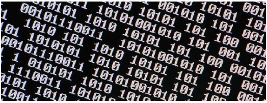
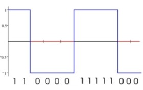
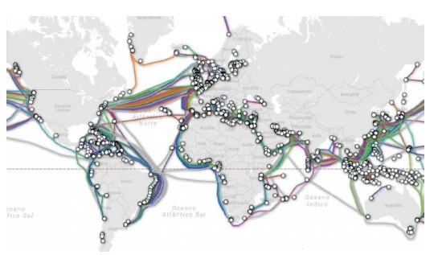
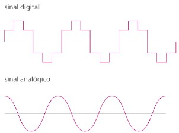
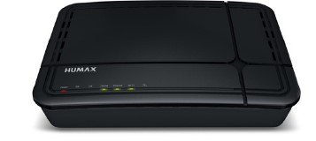
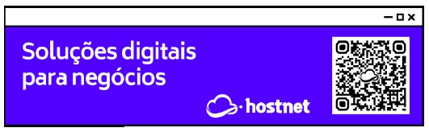
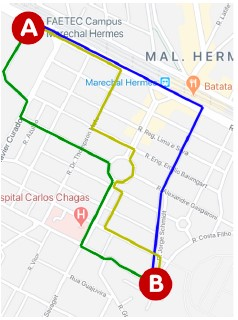
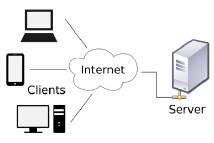

Tudo começa com o sinal
Você sabe que um computador é um equipamento eletrônico capaz de entender apenas um tipo de sinal, não sabe?
Tem gente que acha que um computador é um dispositivo super inteligente e cheio de capacidades de decidir nosso destino, mas na verdade ele é apenas uma máquina capaz de analisar sinais e fazer contas simples de uma maneira super rápida!
Eu sinto te informar, mas resumindo bastante aqui, o computador só é capaz de compreender duas coisas: 0 e 1.

Bits, Bytes e seus múltiplos. Rssa é a linguagem do seu computador
Mas é claro que o que circula dentro do seu computador não são pequenos números, são ondas (sinais). No caso de equipamentos eletrônicos processados, as ondas se parecem com as representadads a seguir.

Esta é uma onda que representa os bits, também chamada de onda digital
Como vimos na aula anterior, a Internet é uma rede gigantesca que interliga várias outras redes ao redor do mundo. E precisamos ter meios físicos para levar esses sinais de um lado para o outro.

Este aí é nosso planeta e suas interligações feitas pelos oceanos
APRENDA MAIS: Quer descobrir detalhes de cada um dos cabos que estão representados acima? O site Submarine Cable Map cria um mapa intertivo e você pode clicar em cada um deles.
Acesse agora: https://www.submarinecablemap.com
E se nesse exato momento você está confuso(a) cin esse conceito, saiba que a maioria das transmissões entre continentes não é realizada pelos Satélites, como a maioria das pessoas constuma pensar. Os satélites possuem uma limitação de tráfego e sogrem muito com interferências, e é por isso que os cabos de fibra ótica devem ser passados pelos oceanos. Um trabalho incalculável, mas necessário.
APRENDA MAIS: Quer aprender mais sobre os cabos submarinos? Assista esse vídeo de 9 minutos que explica mais detalhes.
Dicionário de Informática: https://youtu.be/q-rBtDub3Hc
Mas não dá para esses cabos submarinos saírem pela praia e segurem caminho até a sua casa, e por isso precisam se interligar a outros sistemas de comunicação. Alguns dos sistemas utilizados sempre foram a telefonia tradicional, os sistemas de TV a cabo, os sinais via satélite e até as simples redes de radiofrequência.

O problema é que os sistemas diferentes transmitem sinais em formatos diferentes, com você pode ver na imagem acima. Isso dificultaria a comunicação entre pontos, se não fosse um processo de "conversão", mais conhecido como MODULAÇÃO.
De uma maneira bem resumida, modular é conseguir ler uma onda no formato A compatível com um tipo de sistema de comunicação e converté-la para um formato B, compatível com outro tipo de sistema.
E é exatamente para isso que servem a^queles aparelhos que você instala em sua casa para começar a receber Internet doméstica.

Aparelho muito comum em casas com Internet

Uma das funções desse aparelho é MODULAR os sinais que saem e DEMODULAR os sinais que chegam. E é por isso que chamamos esse aparelho de MODEM.
Já que falamos de Roteadores
As rotas são outro assunto muito importante para o funcionamento da Internet. Pense na rede como se fosse como se fosse um mapa com várias ruas, como no deseho a seguir. De quantas maneiras diferentes podemos chagar do ponto A até o ponto B? Eu imaginei três rotas diferentes e representei usando as linhas coloridas. Quem vai decidir a melhor rota é o Aplicativo de GPS, já que podem existir engarrafamentos e ruas fechadas.
Na Internet também é assim. Para enviar um sinal de um dispositivo A para um dispositvo B, podemos ter várias rotas. Quem vai definir a melhor rota são os ROTEADORES que compõem a rede. Os pacotes de dados podem chegar em seu tudo vai depender do tráfego no momento da transmissão.

Agora que você já sabe como funcionam as rotas, vamos falar sobre os pontos.
Cliente e Servidor
Volte uma página e olhe aquele mapa de novo. Imagie que o ponto A é você na escola pedindo um pzza. O ponto B é a pizzaria, que vai te fornecer o pedido que vai levar seu pedido até você por uma rota.
Nessa situação que descrevi acima, você no ponto A é o CLIENTE. A pizzaria no ponto B é o SERVIDOR. O motoboy é o PACOTE e sua pizza é o DADO. A Internet também vai funcionar dessa maneira.
IMPORTANTE!
Quando você estudar um pouco mais sobre redes de comunicação, vai descobrir que a função MODEM desses aparelhos é apenas uma das características do produto. Na verdade, esse dispositivo é um GATEWAY, que vai se ligar aos ROTEADORES do seu provedor de acesso, mas resolvi simplificar a explicação para não aprofundar tanto assim no início de tudo.
Olhe agora o desenho ao lado. Ele é bem parecido com a história do mapa. Imagine que você está no seu celular tentando acessar um site. O seu celular é o CLIENTE e está pedindo algo pela Internet. Ao descobrir onde está o site, a máquina que vai hospedando ele será o SERVIDOR, que vai fornecer os arquivos que compõem o site. O caminho que vai criar um ligação entre o servidor e você (cliente) vai ser decidido pelos Roteadores da Internet.

Um servidor pode estar no seu bairro, na sua cidade, no seu país ou até mesmo do outro lado do mundo. Os pacotes podem girar o mundo todo em poucos segundos e o resultado será exibido na tela do seu celular/computador com se fosse magia, mas é pura TECNOLOGIA!
Na Internet existem vários servidores:
- Servidor de site (também chamado de WebHost)
- Servidor de streaming
- Servidor de arquivos
- Servidor de e-mail
- E muito mais...
Mas como será que o mecanismo da Internet consegue descobrir o local exato de um site? Como ele descobre em que servidor ele está? E como ele consegue encontrar a posição exata do servidor no Globo? Aí entramos no próximo assunto.
Identificando o nós
Como vimos anteriormente, a Internet funciona baseada em um conjunto de protocolos chamado TCP/IP. Um protocolo garante que todas as comunicações segurão um mesmo padrão, permitindo que dispositivos que são diferentes, com tecnologias completamente distintas, possam se trocar mensagens.
Uma das funções do TCP/IP, mais especificamente do IP, é identificar os nós. Mas o que seria esse nó?
A resposta é simples: um nó é cada ponto que está conectado à rede. Quando você " se conecta" à Internet, recebe uma identificação única. Essa identificação é um ENDEREÇO IP.
Os IPs mais antigos (IPv4) usam 4 octetos, que são conjuntos de 8 bits separados por pontos, totalizando 32 bits por identificador.
Ex: 123.45.67.89 = 01111011.00101101.01000011.01011001
Os IPs mais modernos (IPv6), usam 128 bits ao todo (o que é 4x mais bits o IPv4).
Ex: 2001:0db8:85a3:08d3:1319:8a2e:0370:7344
PRENDA MAIS: Entenda melhor qual é a necessidade de migrar do IPv4. E o que aconterá no futuro, quando a versão antiga parar de funcionar.
NICbr: https://youtu.be/_JbLr_C-HLk
Acessando um servidor
A que você já sabe como os pontos são identificados, vamos criar um sjmples cenário aqui.Analise a imagem abaixo e veja que você estaria no ponto A, tentando acessar o site que está guardado no servidor que é o ponto D.

Você também deve ter notado que o ponto A tem um IP (201.17.81.243) e o ponto D também tem o seu (66.220.158.68). Agora imagine que você deva ter que decorar o IP do seu site favorito. Isso dificultaria todo o processo, não é?
E é para isso que existe o DOMAIN NAME SYSTEM, ou sistema de nomes de domínio. Eles são como grandes "listas telefônicas", criando uma ligação entre o nome do site e o número de IP relacinando a ele.
Importante deixar bem claro: os números de IP mudam constantemente! Sempre que você desconecta o gateway da sua operadora (aquele aparelho que tem instalado na sua casa), o seu número de IP vai mudar.
PRENDA MAIS: Saiba mais sobre o DNS assistindo esse vídeo bem simples e ilustrado.
NICbr: https://youtu.be/ACGuo26MswI
É possível fazer um exercício simples para descobrir o seu próprio IP ou até mesmo descobrir o IP atual de um site que você esteja acessando. Descubra como, lendo o quadro informativo abaixo.
Agora vamos voltar ao desnho da página anterior e entender o passo-a-passo desse acesso.
- Você está no ponto A (conectado à Internet) e digita o endereço do site que está querendo acessar (ex:
www.facebook.com).